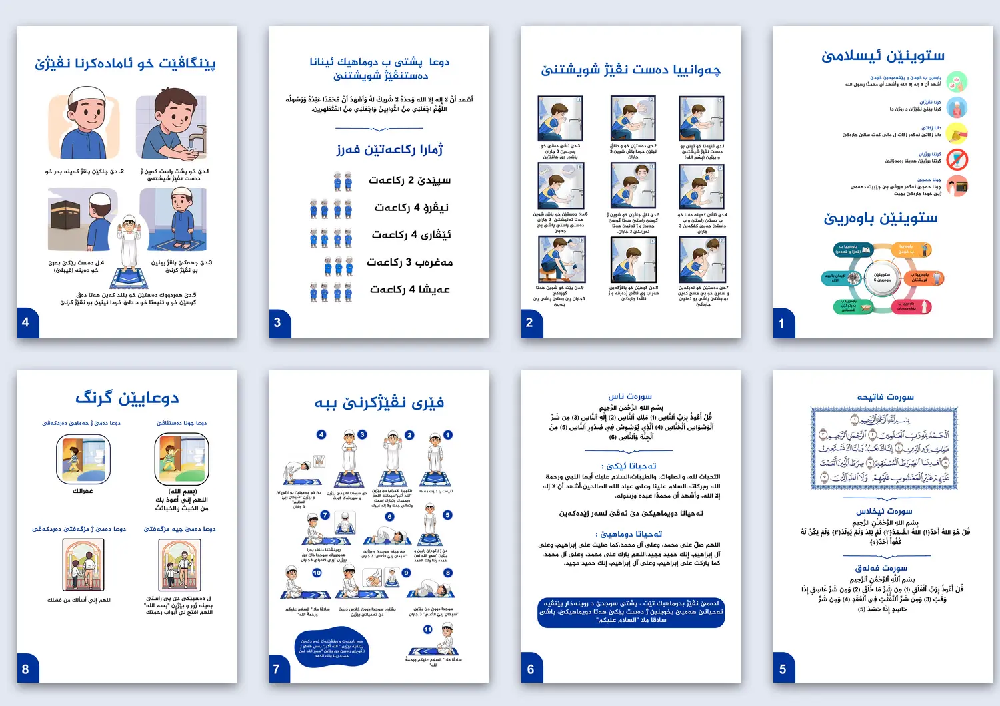
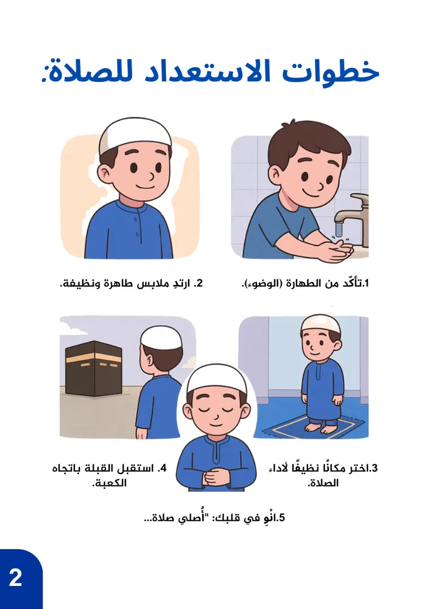

Booklet / children's education
Prayer booklet:
steps a child can follow.
أساسيات الوضوء والصلاة للأطفال — Ablution & Prayer Basics for Children
- Publisher
- Judi Association for Quran Teaching and Memorisation
- Format
- A5, 9 pages
- Language
- Arabic
- My role
- Design

01
Project Overview
A free booklet published by the Judi Association for Quran Teaching and Memorisation to teach children the basics of ablution and prayer. The content was compiled and arranged by مأوى عادل أحمد; my role was the design.
02
Design Challenge
Turning sequential religious text into pages a child can follow on their own.
03
Design Approach
- The number before the word: ablution and prayer are split into numbered steps, each with an illustration and a short line, so a child can follow the order even if they read slowly.
- Headings that speak to the child: «Let's learn ablution» and «Let's learn prayer» instead of dry titles, in large bold type.
- Verses in a frame: the Fatiha sits inside an ornamental frame and the short chapters have coloured headings, so readers can tell explanation from memorised text.
- One calm blue: the same blue for headings, page numbers and illustrations, on a white background with a faint pattern.
- A booklet that belongs to its owner: boxes on the cover for the student's and teacher's names.
Page by page
- 1Pillars of Islam and pillars of faith
- 2Let's learn ablution — 9 numbered steps
- 3Steps to prepare for prayer
- 4The Fatiha, Ikhlas and Falaq chapters
- 5The Nas chapter and the tashahhud
- 6Let's learn prayer — 11 numbered steps
- 7Important prayers
04
Final Deliverables
- Children's bookletA5, 9 pages, Arabic
- Front and back coversWith boxes for the student's and teacher's names
05
Project Gallery




Have a booklet or learning material?
Send the text, the page count and the age group.